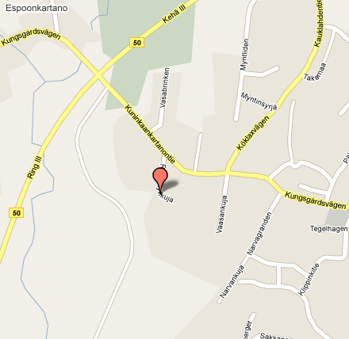

Asunto-osakeyhtiö Akustinmäki
Yhtiö on 1990 rakennettu neljän luhtitalon kokonaisuus, joka sijaitsee Espoon Ramsaynkuja 3:ssa. Yhtiöön kuuluu 27 asunto-osaketta, joiden koot vaihtelevat 62 ja 106 m² välillä.
Ajankohtaisia asioita
- Yhtiön laajakaista päivittyy
- Yhtiön laajakaistayhteys on Academica Oy:n 4/1M liittymä, joka
jaetaan taloyhtiön osakkeisiin HomePNA-tekniikalla. Loppukäyttäjät
tarvitsevat siis HomePNA-sovittimen kytkeytyäkseen taloyhtiön verkkoon.
Laajakaistayhteys maksaa nyt 10 euroa kuussa.
Koska Academica Oyn yhteys on kallis, jäsen AL tilasi NebulaZone Advanced 8/1M -liittymän, joka korvaa vanhan liittymän, mutta ei vaikuta verkon HomePNA-osuuteen. Muutos kuitenkin puolittaa Internet-yhteyden vuosikustannukset säästäen n. 700 euroa. (Säästöt on näillä näkymin tarkoitus siirtää osakkaille, mutta asiasta tiedotetaan myöhemmin.)
Taloyhtiön Internet-yhteyden DNS-palvelimet on vaihdettu käyttämään Googlen palvelmia 8.8.8.8 ja 8.8.4.4, koska Academican oma nimipalvelu on toisinaan rikki, ja Internet-yhteydet eivät toimi.
Taloyhtiöllä on myös kerhohuoneessa WLAN-verkko, jonka nimi on "aku". Salasana tulee jossakin vaiheessa ilmoitustaululle. - Putkimiehen käynti 15.5 jälkeen
- Osakkaille on tiedotettu tarpeellisista märkätilojen pienistä korjauksista, jotka tulisi hoitaa etukäteen parhaansa mukaan. Ilmoitus isännöitsijälle tekemättömistä töistä, jonka jälkeen isännöitsijä koordinoi putkimiehen käynnin.
- Ylimääräinen yhtiökokous 26.5 klo 18:00
- Yhtiökokouksessa keskustellaan taloyhtiön linjasta remonttien suhteen (ja tarvittaessa äänestetään vaihtoehtoisten toimintamallien osalta). Lisäksi hallitus tavoittelee konsensuspäätöstä asunnon D27 toimenpiteiden suhteen asiantuntijan lausuntoon vedoten.
Yhteystiedot ja sijainti kartalla
Ramsaynkuja 3
02780 ESPOO

Ajo-ohjeet
Kehä III:a pitkin ajetaan Kauklahdentien risteykseen, josta käännytään Kauklahdentielle. Kauklahdentieltä käännytään oikealle Kuniinkaankartanontielle, jonka jälkeen Ramsaynkuja on vasemmalla. Akustinmäki alkaa oikealla näkyväst valkoisesta portista, jonka vasemmalla puolella on numero 3.
Länsiväylältä käännytään Kauklahdenväylälle, jonka jälkeen Vanttilan risteyksestä oikealle, ajetaan junaradan alitse alikulusta, jonka jälkeen käännytään vasemmalle kohti juna-asemaa ja heti perään oikealle Kauppamäkeä ylös. Kauppamäki päättyy T-risteykseen, jonka jälkeen ajetaan poikkeamatta kunnes saavutaan Ramsaynkuja 3:lle.
Ohjeet ja säännöt
| Dokumentti | Tyyppi |
|---|---|
| Uuden asukkaan opas | HTML |
| Järjestyssäännöt | |
| Yhtiöjärjestys | |
| Kartta parkkipaikoista | |
| Huoltokirjan malli | |
| Ilmanvaihtolaitteiden hoito-ohje | |
| Lämmityksen tasapainoitus ja äänet |
Remonttioppaat
| Dokumentti | Tyyppi |
|---|---|
| Kosteiden tilojen korjaustöiden tarkastukset | HTML |
| Ilmoitus huoneiston kunnossapito- ja muutostyöstä (REP 475.10) | |
| Opas kunnossapito- ja muutostöitä koskevasta osakkaan ilmoitusvelvollisuudesta |
Postilaatikoiden (Monena Oy) nimikyltit tilataan Ideavintti-nimiseltä firmalta p. 0505121813.
Taloyhtiössä on laajakaistaverkko, johon liittyminen vaatii HomePNA-sovittimen. Tarkemmat ohjeet saa hallitukselta.
Pöytäkirjat
| Dokumentti | Tyyppi |
|---|---|
| Varsinainen yhtiökokous 21.4.2010 |
Hallituksen jäsenet ja isännöitsijä
Vuoden 2011 yhtiökokouksessa valittiin seuraavat jäsenet:
| Nimi ja rooli | Osake | Puh. nro. | Sähköposti | Huomautukset |
|---|---|---|---|---|
| Marjatta Kuusijärvi (Puheenjohtaja) |
A1 | 040-5477913 | marjattakuusijarvi@gmail.com | |
| Antti Lankila Jäsen |
A5 | 044-0755552 | alankila@bel.fi | Internet-asiat |
| Janne Nieminen Varajäsen |
C18 | 0400-905993 | Janne.Nieminen@tamro.com | |
| Marek Öige Varajäsen |
B15 | 040-5178768 | marek.oige@hotmail.com | |
| Klaus Palmqvist Isännöitsijä |
0400-827071 | Klaus.Palmqvist@kcp.fi |